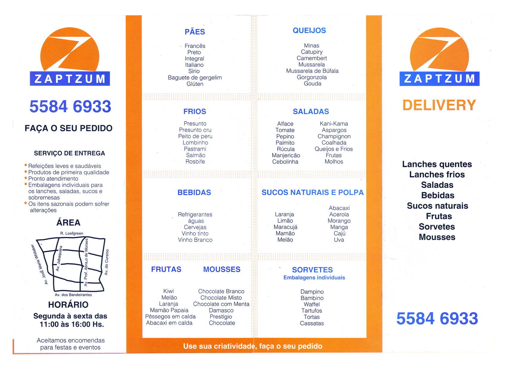
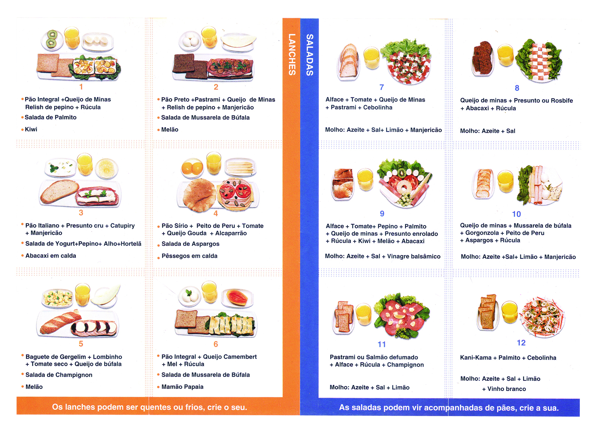

Zaptzum
Essa é uma marca que ajudei a criar no começo do colegial, desenhando a forma do 'Z' circunscrito, acompanhado de um retângulo com o nome. Ela foi criada para representar uma empresa de entrega de lanches. Seguem algumas das programações visuais com a aplicação da marca:
Parte da frente do folder colorido, com 3 dobras em sanfona e impresso em couche brilhante de 150 gramas.
Parte do verso do folder colorido

Frente e verso do folder monocromático, com uma dobra no meio e impresso em papel reciclado de 200 gramas.
Na época desenhei diversos esboços da marca, que já possuia um nome pensado e minha mãe Ariane Cole finalizou as artes no Corel Draw, inclusive escolhendo as cores. A empresa foi criada pelo meu pai Artur Cole, para entregar lanches saudáveis e leves na região do Bairro Bosque da Saúde (uma coinscidência interessante). O cardápio principal eram os lanches e saladas; que continham, ou acompanhavam diversos tipos de: pães, queijos, frios, saladas, mousses, sorvetes, bebidas e sucos tanto naturais, quanto de polpa. Foi a primeira marca que ajudei a criar.